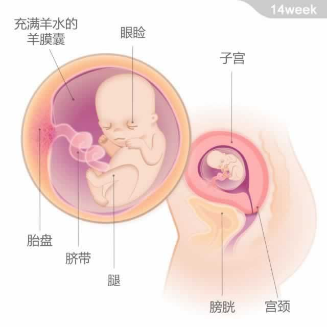

宝宝有一只脐橙大小，重约50克；从头部到臀部的长度为104~114毫米。
宝宝有一只脐橙大小，重约50克；从头部到臀部的长度为104~114毫米。
现在，宝宝的腿长得比胳膊长，关节和四肢都可以活动了。虽然你还感受不到，但其实宝宝经常会在子宫中打嗝，这是呼吸的先兆。
宝宝的眼睑还是完全闭合的状态，但他已经可以感觉到光。如果打开手电筒照肚子，他可能会躲避光源。他的听力器官目前还在继续发育，而羊水担当了声音的传导器。值得期待的是，不久之后宝宝就能听到妈妈的心跳和声音了。
14周之后，可以通过B超分辨宝宝的性别。但根据目前我国的规定，除非确诊了某些特殊遗传性疾病，医生是不可以将胎儿性别告知他人的。所以还是耐心等待，在宝宝出生的那一刻享受揭开谜底的惊喜吧！